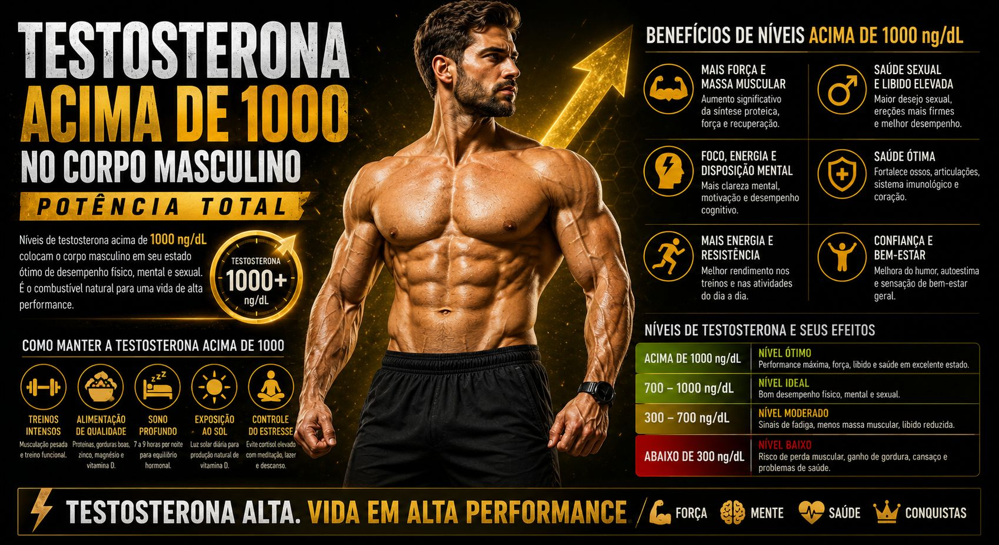
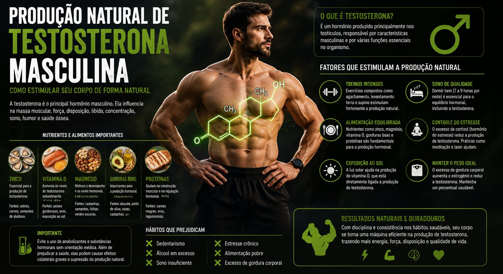

Testosterona: O Combustível para o Ganho de Massa Magra
Para quem busca a hipertrofia e a definição muscular, a testosterona não é apenas um hormônio; é o combustível principal. Essencial para a síntese de proteínas e a recuperação muscular, este hormônio esteroide masculino é o divisor de águas entre resultados medíocres e uma evolução consistente na academia.
Com o passar dos anos ou devido a hábitos nocivos, a produção natural de testosterona tende a cair. Muitos procuram atalhos perigosos, mas a ciência comprova que é possível potencializar a produção natural do corpo de forma segura e sustentável. O segredo está em três pilares: o que você come, como você treina e como você descansa.

1. Alimentação Estratégica: Construindo a Base Hormonal
O corpo não consegue produzir testosterona do nada. Ele precisa dos nutrientes corretos — os "tijolos" químicos. Uma dieta muito restritiva em calorias ou extremamente baixa em gorduras é o caminho mais rápido para derrubar seus níveis hormonais.
Nutrientes Chave para a Testosterona
- Zinco: Mineral fundamental. A deficiência está diretamente ligada a baixos níveis de testosterona.
Onde encontrar: Ostras, carnes vermelhas magras, sementes de abóbora e gergelim. - Vitamina D: Atua quase como um pré-hormônio no corpo. A melhor fonte é a exposição solar segura (15-20 min diários), mas alimentos como ovos inteiros e sardinha ajudam.
- Magnésio: Melhora a biodisponibilidade da testosterona no sangue.
Onde encontrar: Espinafre, couve, sementes e castanhas. - Gorduras Saudáveis e Colesterol: Sim, o colesterol é o precursor da testosterona. Gorduras monoinsaturadas e saturadas (em moderação) são essenciais.
Onde encontrar: Abacate, azeite extra virgem, gemas de ovos e cocos.
Dica do Velho Guerreiro: Evite o álcool em excesso. Ele aumenta a conversão de testosterona em estrogênio e atrapalha a síntese proteica por horas após o consumo.
2. Treinos Regulares: O Estímulo Agudo
Nem todo exercício é igual quando o assunto é liberação hormonal. O cardio leve (como corridas longas e lentas) é ótimo para o coração, mas em excesso pode elevar o cortisol (hormônio do estresse), que é o arqui-inimigo da testosterona. Para potencializar seus hormônios, você precisa de intensidade e sobrecarga.
O Poder dos Exercícios Compostos
Priorize treinos de resistência (musculação) focados em movimentos multiarticulares. Eles recrutam grandes grupos musculares ao mesmo tempo, gerando um estímulo sistêmico muito mais forte para a produção de testosterona.
- Agachamento Livre (Squat): O rei dos exercícios para liberação hormonal.
- Levantamento Terra (Deadlift): Recruta quase todo o corpo.
- Supino (Bench Press): Fundamental para membros superiores.
- Remada Curvada e Desenvolvimento de Ombros.
Outra estratégia eficiente é o HIIT (Treino Intervalado de Alta Intensidade). Séries curtas e explosivas (como tiros de corrida) têm um impacto hormonal agudo superior ao cardio constante.

3. O Pilar Esquecido: Descanso e Recuperação
Você pode comer e treinar perfeitamente, mas se não descansar, sua testosterona não subirá. A maior parte da produção hormonal masculina ocorre durante o sono profundo (Fase REM).
Dormir menos de 6 horas por noite por apenas uma semana pode derrubar seus níveis de testosterona em até 15%.
- Priorize 7 a 9 horas de sono de qualidade.
- Reduza o estresse crônico. O cortisol elevado inibe diretamente a produção e a ação da testosterona.
- Mantenha um peso saudável. O excesso de gordura corporal aumenta a aromatase, uma enzima que converte testosterona em estrogênio.
Conclusão
Melhorar sua testosterona de forma natural não exige milagres, mas exigirá disciplina. Alimentar-se com densidade nutricional, priorizar exercícios compostos pesados e garantir o descanso correto não apenas transformará seu físico através do ganho de massa magra, mas melhorará sua energia, foco e vitalidade geral. Comece sua evolução hoje.